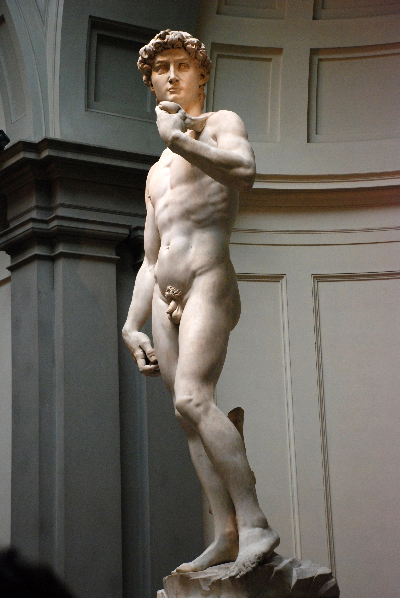

Michelangelo Buonarroti • 1501 - 1504 • 4,86m solo figura • Marmo di Carrara • Galleria dell'Accademia
Torna alla homeI sovrintendenti dell’Opera del Duomo di Firenze avevano chiesto al giovane artista di scolpire un enorme blocco di marmo, malamente intaccato quarant’anni prima, dallo scultore Agostino di Duccio.
 Michelangelo, David, 1501-4. Marmo, altezza 4,34 m. Firenze, Galleria dell’Accademia.
Statue colossali non se ne facevano più dall’antichità.
L’impresa era davvero ardua, infatti, Agostino, che pure era un ottimo scultore, aveva fallito il primo tentativo.
Nel 1476 ci riprovò Antonio Rossellino, ma rinunciò anch’egli, dopo aver, probabilmente, peggiorato la situazione.
Il blocco rimase abbandonato nel cantiere di Santa Maria del Fiore. Nessuno si sentì più di accettare la sfida.
A quanto ne sappiamo, quel marmo era considerato troppo alto e stretto e presentava già una forma antropomorfa.
Inoltre, era fragile e di scarsa qualità, con numerose fenditure e fori. Insomma, chi vi metteva mano rischiava di compromettere reputazione e carriera.
Nel 1501, Michelangelo, che all’epoca aveva solo 26 anni ma aveva già stupito l’Italia intera con la sua Pietà, decise di cimentarsi nell’impresa e completò l’opera dopo tre anni di duro lavoro, rintanato nel piccolo cantiere che aveva creato, per l’occorrenza, innalzando un muro tutto attorno al blocco.
Quando la scultura venne rivelata ai Fiorentini, lo stupore e l’entusiasmo furono incontenibili, anche tra gli umanisti, gli storici e gli eruditi.
Pomponio Gaurico, nel 1504, scrisse che Michelangelo andava considerato tra i maggiori scultori viventi.
E Benedetto Varchi dichiarò che, grazie a quella scultura, la Firenze moderna vinceva perfino sull’antica Roma.
I Fiorentini giudicarono l’opera superiore ad ogni scultura antica e moderna, nonché l’incarnazione stessa della Fortezza e dell’Ira, simboli civici della giovane Repubblica fiorentina di cui Michelangelo era un convinto sostenitore.
La statua era inizialmente destinata ad uno degli sproni absidali della cattedrale.
In seguito, una commissione composta da 14 artisti (tra cui Botticelli e Leonardo) decise di collocarla davanti a Palazzo Vecchio.
La scultura, posta all’interno di una gabbia lignea e appesa a un argano in modo che non toccasse terra, venne trasportata in quattro giorni da piazza Duomo a piazza della Signoria, da più di quaranta uomini che fecero scorrere l’impalcatura su travi unte di grasso: un’operazione difficilissima e rischiosissima.
Nel 1521, durante la rivolta che diede vita alla terza Repubblica, alcune panche lanciate dalle finestre del Palazzo colpirono il capolavoro di Michelangelo, mandando in pezzi il braccio sinistro.
Si dovette aspettare il 1543 prima che la scultura venisse restaurata.
Nel 1882, essa venne trasferita all’interno della Galleria dell’Accademia e al suo posto, nel 1910, fu sistemata una copia in marmo.